무엇을 담을지보다,
무엇을 뺄지 아는 별.
별 이름과 핵심 문장에는 Paperlogy를 쓴다. 짧게, 딱 렌즈 링에 새긴 말처럼.
카메라별 · LPH-B613-09 · HAM MEDIA 별자리
앵글에 넣는 것보다,
무엇을 빼고 찍어도 내 이야기를 전달할지
고르는 순간이 중요했다.
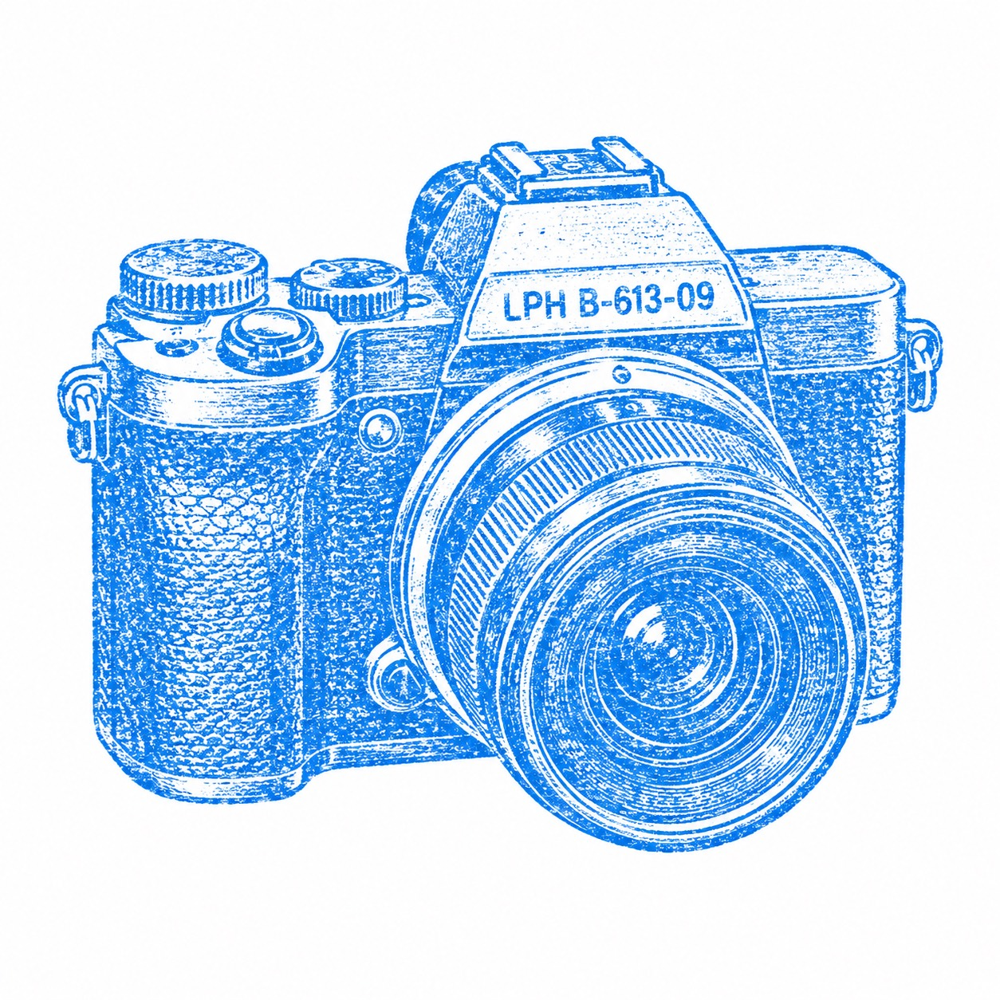
카메라별의 색은 많이 말하지 않는다. 검정은 벽이 되고, 베이지는 읽는 면이 되고, 초록과 빨강과 파랑은 렌즈와 각인처럼 아주 작은 순간에만 보인다.
#0b0d0f첫 화면의 벽. 장비보다 시작 전의 조용함.
#2a3035어두운 면 사이의 깊이. 설명보다 여백.
#b7bcc0금속 선, 프레임, 조심스러운 기준선.
#efe5d2긴 글과 사진 메모가 놓이는 종이.
#4f8f7a살아 있는 별, 선택된 순간의 작은 신호.
#c8102e카메라 몸체의 작은 각인처럼 한 번만.
#4f8aff스탬프와 렌즈 반사에만 남기는 푸른 점.
짧은 문장은 차갑고 정확하게 세운다. 긴 글은 손에 힘을 빼고 읽히게 둔다. 카메라별의 말은 자랑보다 통과의 기록에 가깝다.
별 이름과 핵심 문장에는 Paperlogy를 쓴다. 짧게, 딱 렌즈 링에 새긴 말처럼.
긴 이야기는 Pretendard로 둔다. 두려움, 시작, 고르는 안목은 읽혀야 남는다.
두려움을 통과해야
눈이 생긴다.
들어가는 곳은 네 개다. 글은 두려움에서 시작하고, 사진은 많이 찍은 뒤 남긴 것만 보이고, 지도는 아직 진행 중인 선으로 남는다.
카메라별은 사진을 쌓아두는 곳이 아니다. 시작을 설명하거나, 작업의 자리를 보여주거나, 무엇을 남길지 고르는 감각을 보여주는 사진만 둔다.

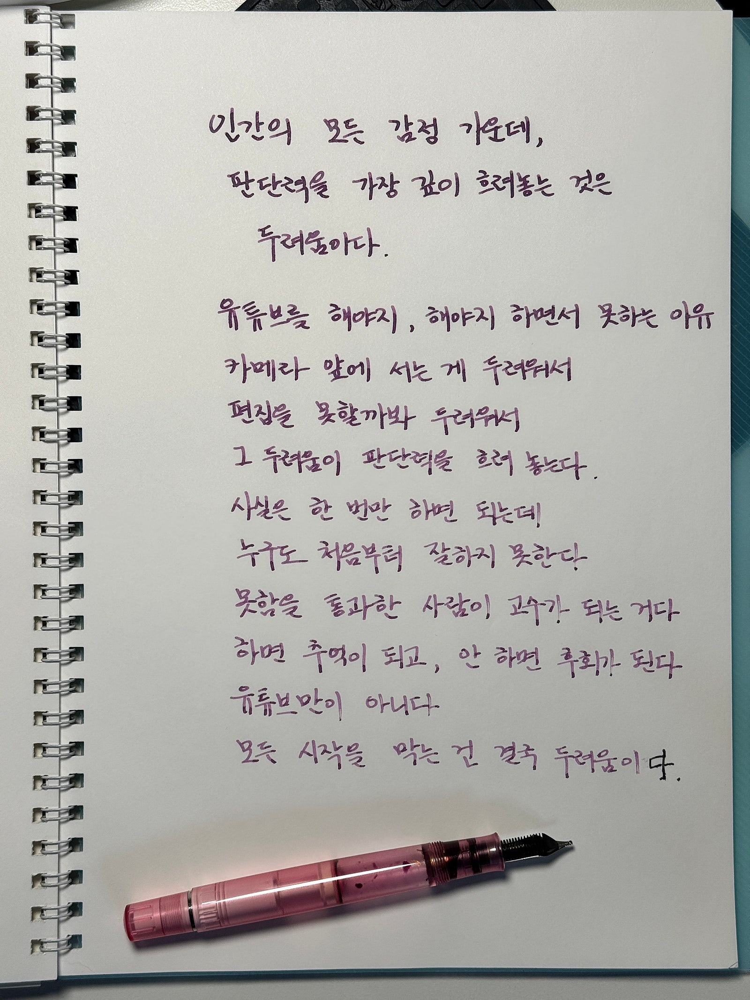


이 별은 잘 찍는 사람의 자랑이 아니다. 잘 못할까 봐 미루던 사람이, 결국 카메라를 들고 많이 찍으며 눈을 길러가는 이야기다.
카메라별의 지도는 장소 목록이 아니다. 찍고, 남기고, 버리고, 다시 고르는 순서가 쌓이는 길이다. 아직 완성된 길보다 진행 중인 선이 어울린다.
무서웠지만 들었다.
많이 찍었다.
그래서 조금씩 고르는 눈이 생겼다.
HAM MEDIA의 편집도 여기에 닿아 있다. 더 많이 붙이는 일이 아니라, 결국 무엇을 남길지 정하는 일. 카메라별은 그 눈이 어디서 시작됐는지 보여준다.
이 별은 HAM MEDIA Design MD 방식으로 정리한 별입니다. 좋아하는 것의 감각을 브랜드의 기준으로 바꾸는 실험이기도 합니다.
글
카메라 / 시작 / 유튜브
사진
카메라와 현장의 흔적


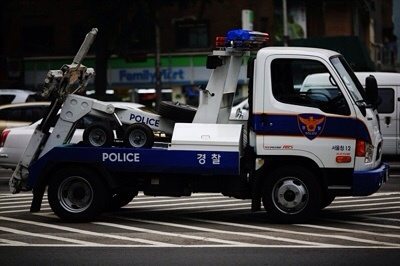
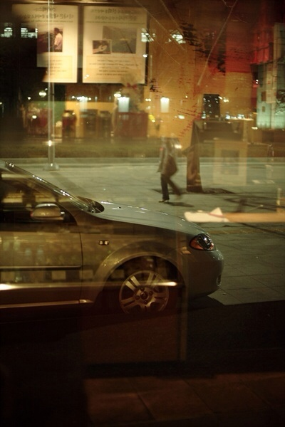
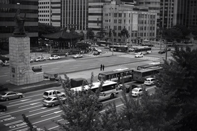
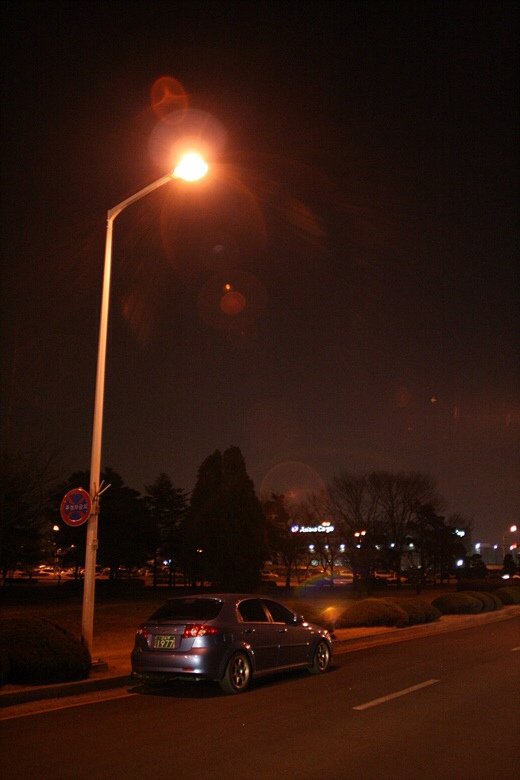
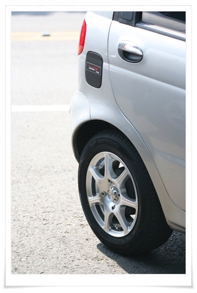
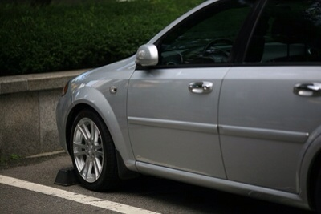
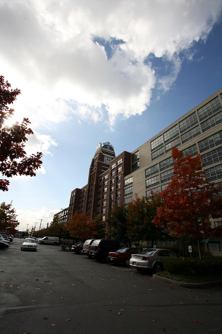
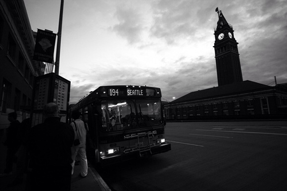
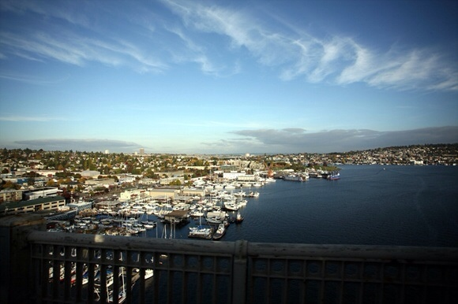
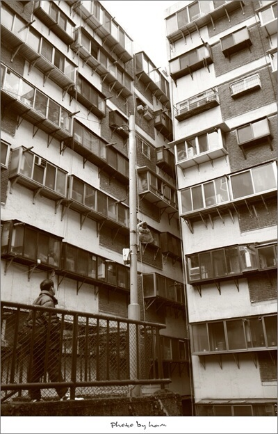
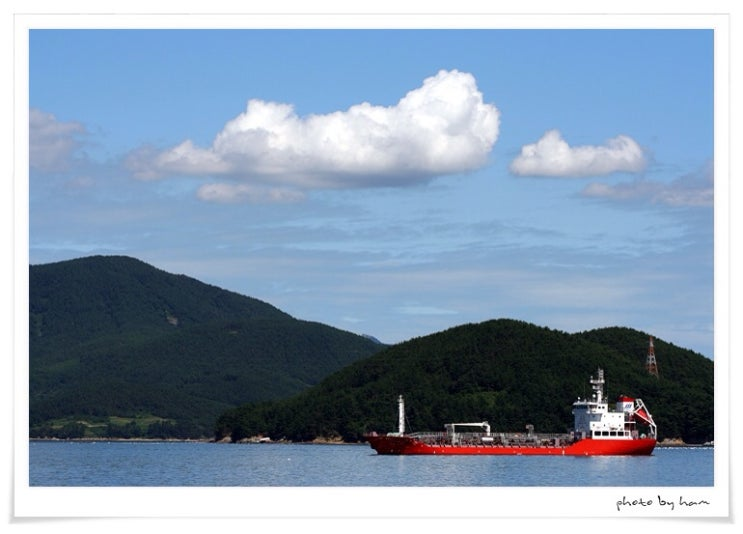
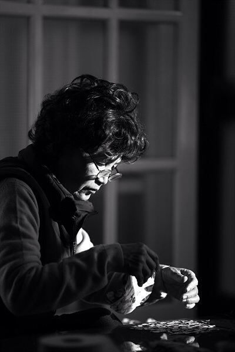
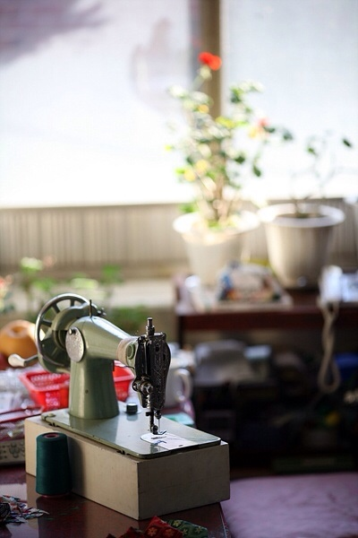
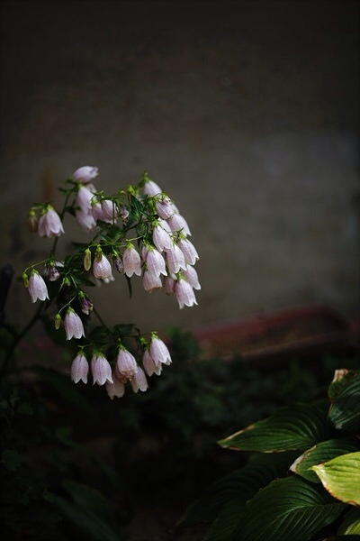
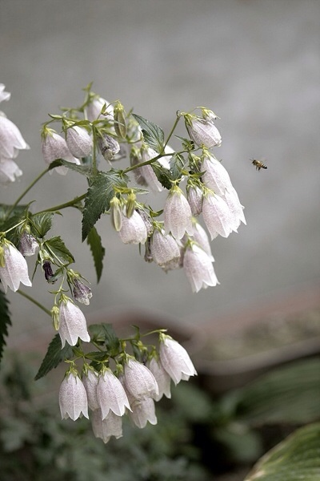
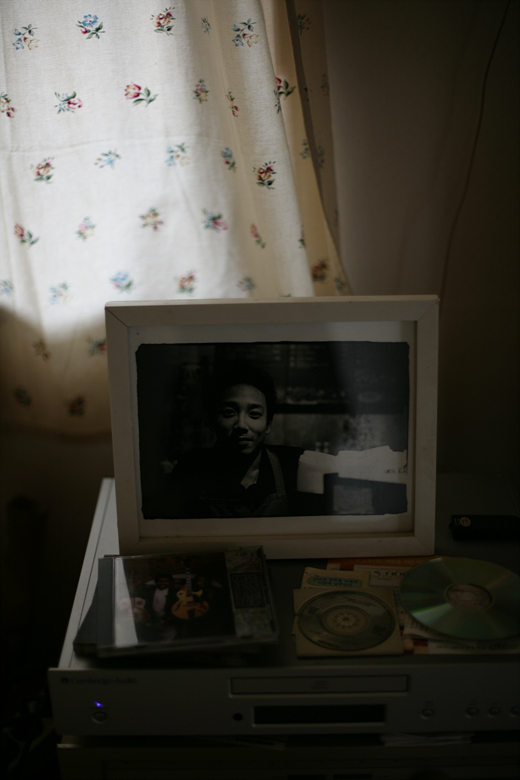
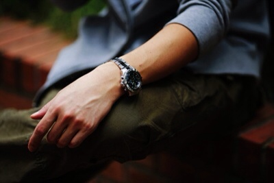
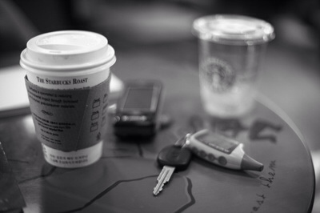
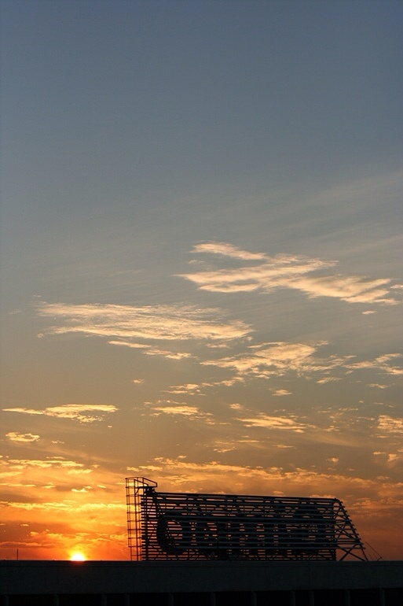
지도
카메라별의 지도는 아직 완성하지 않습니다. 찍고, 고르고, 다시 보는 동선이 쌓이면 이 자리에 열겠습니다.